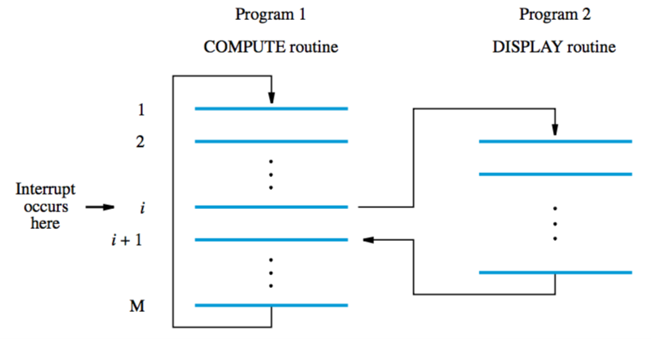

if the program was just waiting for a signal from an I/O device it would be an insane waste of time. that’s why they invented interrupts.
interrupt request — hardware signal sent by I/O device
after a processor receives this signal, it responds through an interrupt-service routine
after interrupt-service routine is done, an interrupt acknowledge signal is sent to the device
interrupts can be enabled/disabled by setting the IE bit of the status register PS
btw, also used in exceptions and debugging!
Example execution:
- Device raises an interrupt request, interrupt request arrives during execution of instruction i
- Processor completes execution of instruction i
- Saves contents of PC (counter) and PS (status)
- Interrupts are disabled by setting IE bit of PS to 0
- Processor loads PC with address of first instruction of interrupt-service routine, routine is executed
- After execution, PC and PS are restored (including setting IE bit to 1)
- Processor continues from instruction i+1

Multiple devices
organised in a priority structure
priority level of processor is priority of program that is being executed
only interrupts from higher priorities than the processor's are accepted
option 1 — polling
- poll all devices
- the first to set the IRQ bit of PS to 1 is serviced
option 2 — vectored interrupts
- allocate area in memory to hold addresses of interrupt-service routines (interrupt vectors)
- each device identifies itself on request
- the info provided by requesting device is a pointer into the interrupt-vector table